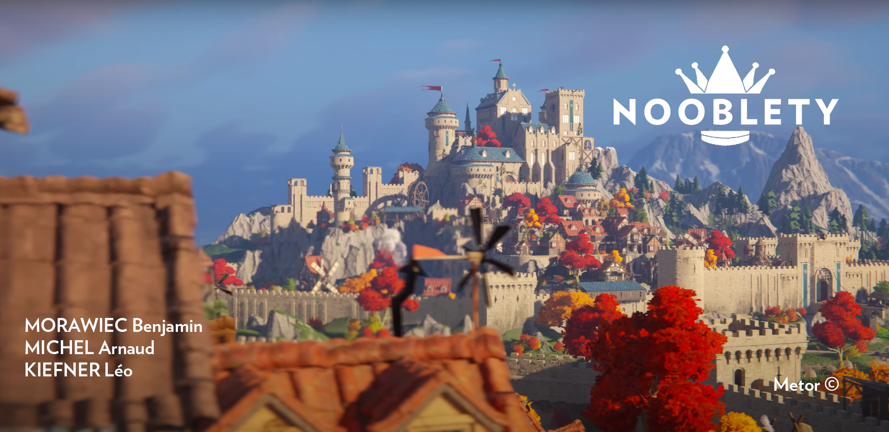

Présentation de Nooblety

Introduction
Nooblety est un jeu immersif qui vous transporte dans un univers médiéval se déroulant à Amboise pendant la Renaissance jusqu'au début des Guerres de religion (1450 - 1574). Vous commencerez en incarnant un jeune paysan, mais votre objectif est de gravir les échelons de la société pour devenir un noble respecté.
Votre personnage naît dans la peau d'un modeste paysan, et vous avez la liberté de choisir comment il évolue. Vous pouvez tenter de maximiser vos profits en vendant vos produits, ou bien essayer (même si cela peut s'avérer difficile) de bâtir un réseau de relations et une réputation parmi les différentes castes sociales.
Une fois votre heure arrivée, le fils de votre personnage naît, vous prendrez le contrôle de sa destinée. Vous pourrez choisir son métier en fonction des ressources et de la réputation que vous avez accumulées avec le personnage précédent. Votre nouveau personnage, un fils né avec des opportunités différentes, pourra entreprendre diverses quêtes visant à obtenir la reconnaissance de la noblesse.
Le jeu se poursuit jusqu'à ce que votre personnage atteigne le statut de noble tant convoité ou jusqu'à la fin d'un nombre prédéfini de générations. Serez-vous capable de guider votre lignée vers la noblesse et la gloire dans cet univers médiéval exigeant ?
Equipe de développement
Arnaud Michel (Développeur, Coordinateur GIT, Game Designer, Scénariste)
Léo Kiefner (Développeur, Game Designer, Mappeur, Scénariste)
Benjamin Morawiec (Développeur, Game Designer, Scénariste, Graphiste, Gestionnaire de la base de données)